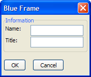

{BLUEFRAME}
Syntax
{FRAME= Columns, Rows : [ Text ] }
|
Argument |
Type |
Description |
| Columns |
N |
The number of columns for the frame to surround. |
| Rows |
N |
The number of rows for the frame to surround. |
| Text |
C |
Optional. The title of the frame. |
Description
The {BLUEFRAME} command draws a box around one or more cells of the Xdialog grid. The frame color is the standard blue used by Windows XP.

Supported By
Alpha Five Version 8 and Above
Example
|
ui_dlg_box("Blue Frame",<<%dlg% {blueframe=1,1:Information} {region} Name: | [.20name]; Title: | [.20title]; {endregion}; {lf}; %dlg%) |
See Also